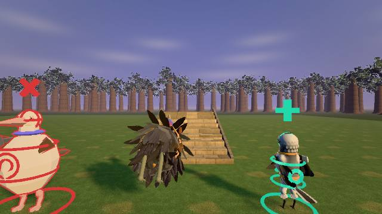
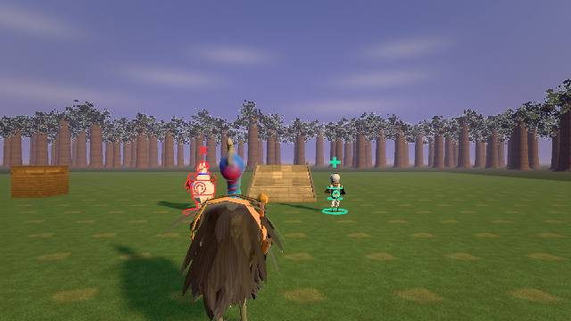
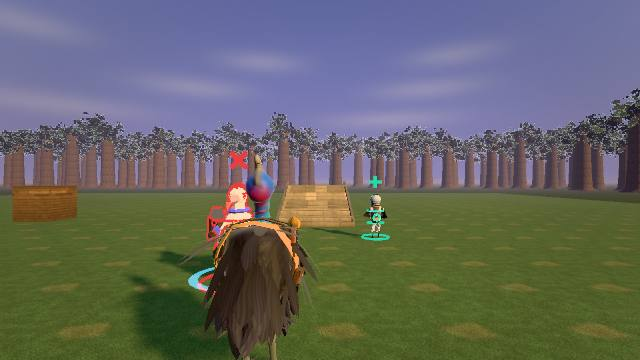

Cassowary Playable
Tank / initiator · Playable since Stage 4
Appearance: the tallest hero and flightless: a mound of shaggy, hair-like black plumage on thick scaly legs with a dagger claw; a tall bony blue-grey casque on the head; bright blue neck with two red wattles hanging at the throat. Reads as "black haystack on legs with a blue neck and a helmet".
How to play
Tanks start fights and soak damage. Take space for your flock, use your big health pool and resists to absorb tower fire, and use your control abilities on the enemies your allies are about to shoot.
Cassowary fights with the Wattle Blaster, which hits instantly. Damage drops off between 14 m and 30 m, and head hits are beak shots worth ×1.65. Every level above 1 is a Molt: +46 max HP per level; +3% gun damage of base per level; +1 Song power per level; +3 melee damage per level.
Abilities
Four abilities. Slots 1 to 3 unlock at level 1, the ultimate at level 6. Each can be upgraded three times, for 1, 2, 5 AP, in order; see Ability Points. The shortest cooldown in the kit is Dagger Kick at 10 s.

1. Rampage
Charge 20 m in 1.0 s along your aim, steering up to 30° either way, unstoppable. The first enemy hero you hit takes 90 + 0.8 x SP Song damage and is knocked up 0.75 s, and the charge stops there.
- Tier 1 · 1 AP+30 damage (120 + 0.8 x SP) damage +30
- Tier 2 · 2 AP-4 s cooldown cooldown -4 s
- Tier 3 · 5 APHits every hero along the path and does not stop pass +1
2. Dagger Kick
Kick a 4 m, 60 degree cone: 100 + 1.0 x SP Song damage, 5 m knockback and -15% Talon resist for 5 s.
- Tier 1 · 1 AP+30 damage (130 + 1.0 x SP) damage +30
- Tier 2 · 2 APShred 25% shred +0.1
- Tier 3 · 5 AP2 charges +1 charge

3. Bristle
For 5 s you have a Talon shield of 250 + 2.0 x SP, and enemy heroes within 15 m who damage you take 20% of that damage back as Song damage.
- Tier 1 · 1 AP+100 shield (350 + 2.0 x SP) shield +100
- Tier 2 · 2 AP-6 s cooldown cooldown -6 s
- Tier 3 · 5 APAlso a Song shield of the same amount

4. Boom Call
A deep boom pulls every enemy within 12 m 6 m toward you; they take 120 + 1.0 x SP Song damage and are slowed 50% for 2 s. Then you are unstoppable with +40% Talon and Song resist for 4 s.
- Tier 1 · 1 AP+4 m radius (16 m) range +4 m, radius +4
- Tier 2 · 2 APPulled enemies are also stunned 0.75 s stun r +16
- Tier 3 · 5 AP-30 s cooldown (80 s) cooldown -30 s
Since Stage 4. See all heroes.